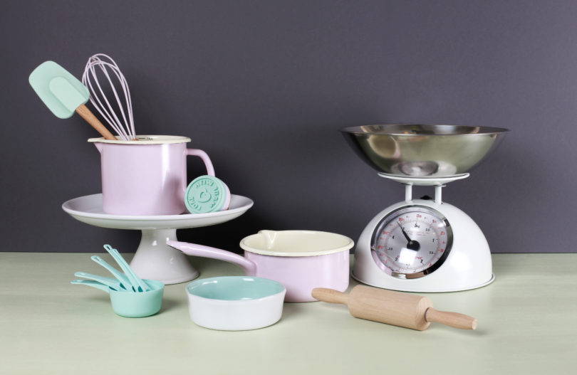
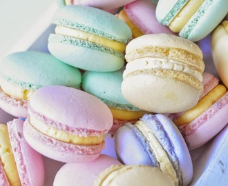

Baka med Frida
Välkommen här kommer några av mina tips som kan underlätta när man bakar


-
Rumstemparerande råvaror
-
En palett som du kan bre på en frosting med så att det blir slätt
-
När man ska smälta choklad är det bättre att smälta chokladen i en bunke över en kastrull med kokande vatten(vattenbad)
-
väg smöret på en våg så det blir exakt.
-
va noga när du mäter upp ingridienser
-
kakan ska vara inne i ugnen tills man kan sticka den uten att stickan blir kladdig
-
börja med något enkelt
-
det blir inte ALLTID perfekt
-
när man häller upp mjöl så skaka på måttet lite så att mjölet inte packas det ät lätt att få för mycket